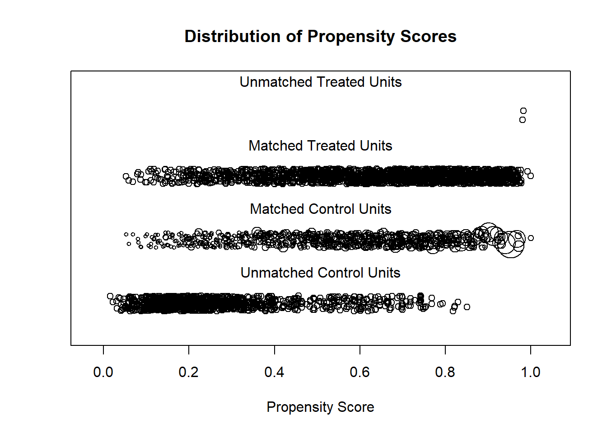
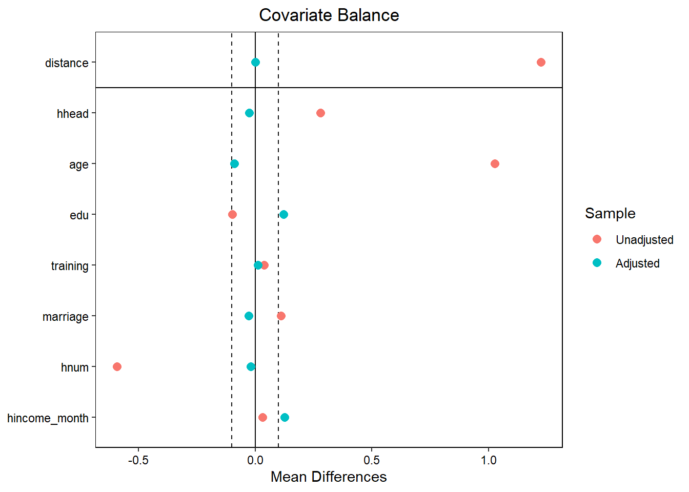

library(foreign)
library(tidyverse)
library(MatchIt)
library(cobalt)경기 미취업청년 잠재소득 추정
0. 필요 라이브러리
1. 데이터 및 기본 전처리
1.1. Raw data
선행연구에 따르면 취업의 결정요인으로서 개인특성변수(성별, 연령, 교육수준, 혼인여부, 거주지역(서울인지 아닌지), 가구주여부, 사회경제적 지위 인식, 직업훈련경험, 자격증)와 가구특성변수(가족 구성원수, 부모동거여부, 입주형태, 가구소득)가 있다고 밝힘.1
선행연구에서의 취업결정요인을 채택하고, 선행연구에서 수행한 데이터인 한국노동패널조사 자료를 이용.
1.1.1. 23차 한국노동패널조사_개인용(klips23p)
| 번호 | 변수명 | 설명 |
| 1 | hhid23 | 23차 조사 가구번호, join key |
| 2 | hmem23 | 23차 조사 개인번호 |
| 3 | p230101 | 성별 (1: 남자, 2: 여자) |
| 4 | p230102 | 가구주와의 관계 (10: 가구주, 20: 배우자, 그외: 가구주 아님) |
| 5 | p230107 | 만나이 |
| 6 | p230108 | 동거여부 (1: 동거, 2: 비동거) |
| 7 | p230110 | 학력 (1: 미취학, 2: 무학, 3: 초등, 4: 증등, 5: 고등, 6: 2년제(전문), 7: 4년제(종합), 8: 석사, 9: 박사) |
| 8 | p230111 | 이수여부 (1: 졸업, 2: 수료, 3: 중퇴, 4: 재학중, 5: 휴학중) |
| 9 | p230121 | 거주지역 (1: 서울) |
| 10 | p230201 | 취업여부 (1: 취업, 2: 미취업) |
| 11 | p236615 | 사회경제적지위 (1: 상상, 2: 상하, 3: 중상, 4: 중하, 5: 하상, 6:하하) |
| 12 | p234501 | 직업훈련경험유무 (1: 받아본 경험이 있다, 2: 현재 받고 있다, 3: 받아본 경험이 없다) |
| 13 | p234701 | 자격증 (1: 자격증 보유, 2: 자격증 미보유) |
| 14 | p235501 | 혼인상태 (1: 미혼, 2: 기혼, 3: 별거, 4: 이혼, 5: 사별) |
| 15 | p231642 | 개인 월 임금소득 (단위: 천원) |
1.1.2. 23차 한국노동패널조사_가구용(klips23h)
| 번호 | 변수명 | 설명 |
| 1 | hhid23 | 23차 조사 가구번호, join key |
| 2 | h230150 | 가구원수 |
| 3 | h231406 | 입주형태 (1: 자가, 2: 전세, 3: 월세, 4: 기타) |
| 4 | h232202 | 가구 지난 한달 근로소득 (단위: 천원) |
| 5 | h232204 | 가구 지난 한달 금융소득 (단위: 천원) |
| 6 | h232206 | 가구 지난 한달 부동산소득 (단위: 천원) |
| 7 | h232208 | 가구 지난 한달 사회보험소득 (단위: 천원) |
| 8 | h232210 | 가구 지난 한달 이전소득 (단위: 천원) |
| 9 | h232212 | 가구 지난 한달 기타소득 (단위: 천원) |
1.2. base_table
| 번호 | 변수명 | 설명 |
| 1 | h_id | join용 키, 가구식별번호 |
| 2 | p_id | 개인식별번호 |
| 3 | sex | 성별 (0: 남자, 1: 여자) |
| 4 | hhead | 가구주여부(1: 가구주와 가구주의 배우자, 0: 그 외) |
| 5 | age | 만나이 (단위: 세), 청년 15 - 29세만 |
| 6 | edu | 학력 (1: 미취학, 2: 무학, 3: 초등, 4: 중등, 5: 고등, 6: 2년제(전문), 7: 4년제(종합), 8: 석사, 9: 박사) |
| 7 | edu_state | 이수여부 (1: 졸업, 2: 수료, 3: 중퇴, 4: 재학중, 5: 휴학중) * 무학인 경우에는 na |
| 8 | seoul | 거주지역 (1: 서울, 0: 그 외) |
| 9 | job | 종속변수, 취업여부 (1: 취업, 0: 미취업) |
| 10 | social | 사회경제적지위 (1: 상상, 2: 상하, 3: 중상, 4: 중하, 5: 하상, 6:하하) |
| 11 | training | 직업훈련경험유무 (1: 받아본 경험이 있다 / 현재 받고 있다, 0: 받아본 경험이 없다) |
| 12 | license | 자격증 보유여부 (1: 자격증 보유, 0: 자격증 미보유) |
| 13 | marriage | 혼인상태 (0: 미혼, 1: 그 외) |
| 14 | hnum | 가구원수 (단위: 명) |
| 15 | house | 주택보유여부 (1: 자가, 0: 그 외) |
| 16 | cohabit | 동거여부 (0: 미동거, 1: 동거) |
| 17 | hincome_month | 가구 월소득 (단위: 천원) |
| 18 | pincome_month | 개인 월 임금소득 (단위: 천원) |
klips23p <- read.spss('./data/klips23p.sav', to.data.frame = TRUE, use.value.labels = FALSE)
klips23h <- read.spss('./data/klips23h.sav', to.data.frame = TRUE, use.value.labels = FALSE)
raw <- left_join(klips23h, klips23p, by = 'hhid23')
base_table <- raw %>%
select(hhid23, hmem23, p230101, p230102, p230107, p230108,
p230110, p230111, p230121, p230201, p236615, p234501,
p234701, p235501, h230150, h231406, p231642, h232202,
h232204, h232206, h232208, h232210, h232212
) %>%
mutate(sum_var = coalesce(h232202, 0) +
coalesce(h232204, 0) +
coalesce(h232206, 0) +
coalesce(h232208, 0) +
coalesce(h232210, 0) +
coalesce(h232212, 0)
) %>%
select(-h232202, -h232204, -h232206, -h232208, -h232210, -h232212) %>%
mutate(
p230101 = case_when(
p230101 == 1 ~ 0,
p230101 == 2 ~ 1,
TRUE ~ p230101
),
p230102 = case_when(
p230102 == 10 ~ 1,
p230102 == 20 ~ 1,
TRUE ~ 0
),
p230108 = case_when(
p230108 == 1 ~ 1,
p230108 == 2 ~ 0,
TRUE ~ p230108
),
p230121 = case_when(
p230121 == 1 ~ 1,
TRUE ~ 0
),
p230201 = case_when(
p230201 == 1 ~ 1,
p230201 == 2 ~ 0,
TRUE ~ p230201
),
p234501 = case_when(
p234501 == 3 ~ 0,
TRUE ~ 1
),
p234701 = case_when(
p234701 == 1 ~ 1,
p234701 == 2 ~ 0,
TRUE ~ p234701
),
p235501 = case_when(
p235501 == 1 ~ 0,
TRUE ~ 1
),
h231406 = case_when(
h231406 == 1 ~ 1,
TRUE ~ 0
)) %>%
rename(
h_id = hhid23,
p_id = hmem23,
sex = p230101,
hhead = p230102,
age = p230107,
edu = p230110,
edu_state = p230111,
seoul = p230121,
job = p230201,
social = p236615,
training = p234501,
license = p234701,
marriage = p235501,
hnum = h230150,
house = h231406,
cohabit = p230108,
hincome_month = sum_var,
pincome_month = p231642
) %>%
filter(!is.na(h_id) & !is.na(p_id) & !is.na(edu_state)) %>%
filter(age >= 19 & age <= 34)na_count <- sapply(base_table, function(col) sum(is.na(col)))
print(na_count) h_id p_id sex hhead age
0 0 0 0 0
cohabit edu edu_state seoul job
0 0 0 0 0
social training license marriage hnum
0 0 0 0 0
house pincome_month hincome_month
0 1882 0 summary(base_table) h_id p_id sex hhead
Min. : 11 Min. : 1.000 Min. :0.0000 Min. :0.0000
1st Qu.: 3943 1st Qu.: 2.000 1st Qu.:0.0000 1st Qu.:0.0000
Median : 9584 Median : 3.000 Median :1.0000 Median :0.0000
Mean : 79009 Mean : 2.891 Mean :0.5124 Mean :0.3232
3rd Qu.:201078 3rd Qu.: 4.000 3rd Qu.:1.0000 3rd Qu.:1.0000
Max. :210102 Max. :12.000 Max. :1.0000 Max. :1.0000
age cohabit edu edu_state
Min. :19.0 Min. :0.0000 Min. :3.000 Min. :1.000
1st Qu.:23.0 1st Qu.:1.0000 1st Qu.:6.000 1st Qu.:1.000
Median :27.0 Median :1.0000 Median :7.000 Median :1.000
Mean :26.7 Mean :0.9493 Mean :6.423 Mean :1.967
3rd Qu.:31.0 3rd Qu.:1.0000 3rd Qu.:7.000 3rd Qu.:4.000
Max. :34.0 Max. :1.0000 Max. :9.000 Max. :5.000
seoul job social training
Min. :0.0000 Min. :0.0000 Min. :-1.000 Min. :0.00000
1st Qu.:0.0000 1st Qu.:0.0000 1st Qu.: 4.000 1st Qu.:0.00000
Median :0.0000 Median :1.0000 Median : 4.000 Median :0.00000
Mean :0.1833 Mean :0.5056 Mean : 4.119 Mean :0.03913
3rd Qu.:0.0000 3rd Qu.:1.0000 3rd Qu.: 5.000 3rd Qu.:0.00000
Max. :1.0000 Max. :1.0000 Max. : 6.000 Max. :1.00000
license marriage hnum house
Min. :0.00000 Min. :0.0000 Min. :1.000 Min. :0.0000
1st Qu.:0.00000 1st Qu.:0.0000 1st Qu.:3.000 1st Qu.:0.0000
Median :0.00000 Median :0.0000 Median :4.000 Median :1.0000
Mean :0.01858 Mean :0.2092 Mean :3.342 Mean :0.5709
3rd Qu.:0.00000 3rd Qu.:0.0000 3rd Qu.:4.000 3rd Qu.:1.0000
Max. :1.00000 Max. :1.0000 Max. :8.000 Max. :1.0000
pincome_month hincome_month
Min. : 0.0 Min. : 0.0
1st Qu.: 185.0 1st Qu.: 300.0
Median : 230.0 Median : 463.0
Mean : 234.9 Mean : 512.0
3rd Qu.: 280.0 3rd Qu.: 663.5
Max. :1000.0 Max. :15000.0
NA's :1882 2. 취업여부에 영향을 주는 변수 탐색
선행연구에서 언급된 변수를 Probit regression을 이용하여 영향 검증.
선행연구에서 취업여부에 영향을 준다고 했던 변수 중 hhead, age, edu, training, marriage, hnum, hincome_month이 0.05수준에서 유의하였고, 해당 변수들을 취업군과 미취업군간 성향점수매칭에 사용.
base_table$pincome_month[is.na(base_table$pincome_month)] <- 0
probit_test <- glm(job ~ . -h_id -p_id -pincome_month -edu_state,
family=binomial(link="probit"),
data=base_table)
summary(probit_test)
Call:
glm(formula = job ~ . - h_id - p_id - pincome_month - edu_state,
family = binomial(link = "probit"), data = base_table)
Coefficients:
Estimate Std. Error z value Pr(>|z|)
(Intercept) -2.058e+00 3.213e-01 -6.406 1.50e-10 ***
sex 5.267e-02 4.788e-02 1.100 0.271
hhead 5.331e-01 1.100e-01 4.845 1.27e-06 ***
age 1.292e-01 6.573e-03 19.659 < 2e-16 ***
cohabit 1.045e-01 1.103e-01 0.947 0.343
edu -1.904e-01 2.959e-02 -6.436 1.23e-10 ***
seoul -6.755e-02 6.168e-02 -1.095 0.273
social 1.732e-02 2.826e-02 0.613 0.540
training 5.662e-01 1.282e-01 4.416 1.00e-05 ***
license 1.424e-01 1.717e-01 0.830 0.407
marriage -8.209e-01 1.075e-01 -7.635 2.26e-14 ***
hnum -2.324e-01 2.957e-02 -7.859 3.87e-15 ***
house -5.407e-02 5.330e-02 -1.015 0.310
hincome_month 8.801e-04 9.156e-05 9.611 < 2e-16 ***
---
Signif. codes: 0 '***' 0.001 '**' 0.01 '*' 0.05 '.' 0.1 ' ' 1
(Dispersion parameter for binomial family taken to be 1)
Null deviance: 4923.7 on 3551 degrees of freedom
Residual deviance: 3934.5 on 3538 degrees of freedom
AIC: 3962.5
Number of Fisher Scoring iterations: 123. Propensity score matching
미취업청년의 정의는 취업이 되지 않는 청년을 의미하므로 엄밀한 의미의 실업자에 더하여 정규교육기관 휴학 및 재학자까지 미취업청년으로 간주됨.
따라서 본래의 미취업청년 케이스에 실업자 성격의 미취업청년(정규교육기관 휴학 및 재학자를 제외한)의 케이스를 추가로 분석하고자함
3.1. 미취업청년_정규교육기관 휴학 및 재학을 포함하여
# psm
loose_case <- base_table
match_loose <- matchit(job ~ hhead + age + edu + training +
marriage + hnum + hincome_month,
data = loose_case, distance = "glm", link="probit",
method="nearest", caliper = .03, replace = TRUE)plot(match_loose, type = "jitter", interactive = F)
Note
두 집단의 특성이 달라 일부 표본이 재집계되는 경우가 있었음
# covariate mean difference
love.plot(match_loose,
var.names = list("Household Head" = "hhead", "Age" = "age",
"Education" = "edu", "Training" = "training",
"Marriage" = "marriage", "Household Number" = "hnum",
"Monthly Income" = "hincome_month"),
threshold = .1)
Note
대부분의 변수들은 공변량의 균형이 나아져 성향점수매칭의 효과가 있었다고 볼 수 있음
# matching result
match_loose_dat <- match.data(match_loose)
table(match_loose_dat$job)
0 1
688 1794 # potential income
mean(match_loose_dat$pincome_month[match_loose_dat$job == 1])[1] 218.3946
Note
미취업청년과 성향점수매칭으로 매칭된 취업청년의 월소득의 평균은 약 218만 3천원으로 집계
3.2. 미취업청년_정규교육기관 휴학 및 재학을 제외하고
# psm
strict_case <- base_table %>%
filter(!(job == 0 & (edu_state == 4 | edu_state == 5)))
match_strict <- matchit(job ~ hhead + age + edu + training + marriage + hnum + hincome_month,
data = strict_case, distance = "glm", link="probit",
method="nearest", caliper = .03, replace = TRUE)# distribution of propensity score
plot(match_strict, type = "jitter", interactive = F)
Note
두 집단의 특성이 달라 일부 표본이 재집계되는 경우가 있었음
# covariate mean difference
love.plot(match_strict,
var.names = list("Household Head" = "hhead", "Age" = "age",
"Education" = "edu", "Training" = "training",
"Marriage" = "marriage", "Household Number" = "hnum",
"Monthly Income" = "hincome_month"),
threshold = .1)
Note
대부분의 변수들은 공변량의 균형이 나아져 성향점수매칭의 효과가 있었다고 볼 수 있으나, 여전히 평균차가 큰(0.1 이상) 공변량들이 보이고, 규교육기관 휴학 및 재학을 포함한 케이스보다 매칭정도가 떨어짐을 확인할 수 있음
# matching result
match_strict_dat <- match.data(match_strict)
table(match_strict_dat$job)
0 1
585 1783 # potential income
mean(match_strict_dat$pincome_month[match_strict_dat$job == 1])[1] 217.9809
Note
미취업청년과 성향점수매칭으로 매칭된 취업청년의 월소득의 평균은 약 218만 3천원으로 집계
Footnotes
유진성(2019), 이미숙 외(2021)↩︎